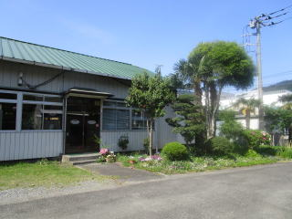

ダイカスト金型の設計・製作
昭和36年からダイカスト金型の製造を続けています。型がなければ一つも成りません。図面をお預かりしたところから設計に入ります。
SINCE 1957
はじまりは、青少年に科学する心を、という願いでした。模型エンジンの開発に着手し、3年かけて「Ｆｕｊｉエンジン」を完成させます。その加工技術が、アルミと亜鉛のダイカストへ移りました。丹沢山地の南、神奈川県山北町。昭和32年の設立から、金属を型に流して形にすることを続けています。

1957年
設立（昭和32年10月）
135–800t
ダイカストマシン型締力
18名
従業員数（2024年1月現在）
3億円
年商
WHAT WE DO
アルミ・亜鉛ダイカストメーカーとして、金型の設計・製作から鋳造、機械加工、塗装・表面処理までをお受けしています。金型製作・機械加工・塗装・表面処理は協力会社と分担しています。
昭和36年からダイカスト金型の製造を続けています。型がなければ一つも成りません。図面をお預かりしたところから設計に入ります。
亜鉛合金は昭和35年1月、アルミ合金は同年7月から。社内のダイカストマシンはDC135t〜DC800tを揃えており、小ロットの生産にも対応します。平成17年には東芝製の超高速機DC350t JMHを導入しました。
昭和58年に加工工場を新築し、マシニングセンターを導入して精密加工を始めました。ミツトヨ製の三次元測定機で寸法を確かめます。
製品の塗装と表面処理まで含めてお受けします。平成7年には熱処理炉を導入し、アルミ製品のアニール処理も行っています。
EQUIPMENT
ダイカストマシン7台を含む、12種14台。型締力の異なる機械を並べているため、大きな部品も小さな部品も同じ工場で通せます。
| 名称 | 台数 |
|---|---|
| 東芝製 ＤＣ800ｔＣ | 1 |
| 東芝製 ＤＣ350ｔＪＭＨ | 1 |
| 東芝製 ＤＣ350ｔＪＳＣ | 1 |
| 東芝製 ＤＣ350ｔＣ | 1 |
| 東芝製 ＤＣ135ｔＪＳＣ | 1 |
| 東芝製 ＤＣ135ｔＨＳ | 1 |
| 東芝製 ＤＣ135ｔＥＬ | 1 |
| ミツトヨ製 三次元測定機 | 1 |
| 日神金属製 研掃機 | 2 |
| 大紀アルミ製 溶解保持炉 | 1 |
| ＴＯＫＡＩ製 アルミ溶解保持炉 | 2 |
| メイチュー製 アルミ溶解保持炉 | 1 |
CLIENTS
ほか多数（五十音順ではなく、現行サイトの記載順です）
HISTORY
模型エンジンの研究から、ダイカスト、そして海外へ。
COMPANY
ダイカスト部品のご相談を承ります。図面がお手元にある場合は、そのままお送りください。小ロットのご相談にも対応しています。